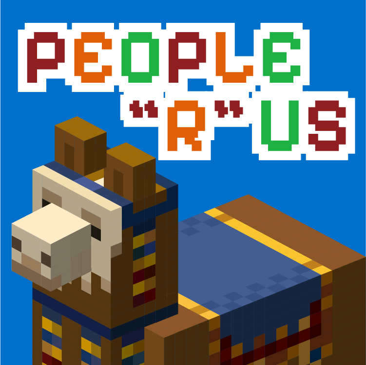
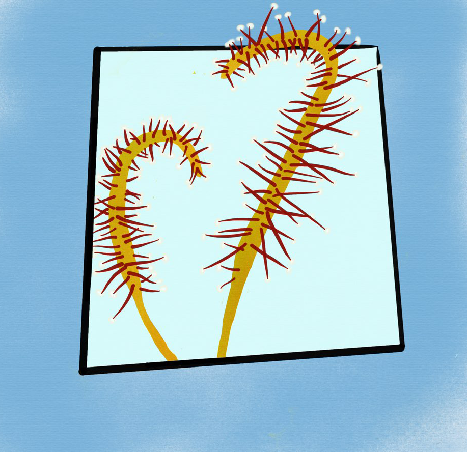
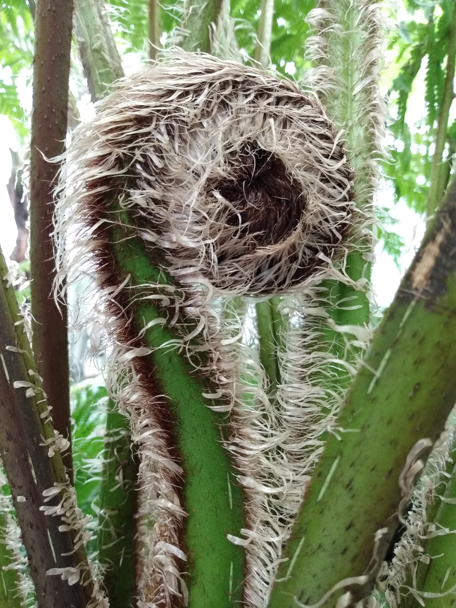

Minecraft Server Logo

This logo was a fun little project I created for a personal server, and it quickly became one of my favorite playful designs. It’s a light‑hearted twist on the classic Toys “R” Us logo, which made the whole process feel nostalgic and a bit mischievous. Working on it gave me a chance to experiment with a pixelated art style—something I don’t usually use—and it was refreshing to step outside my normal design habits. The blocky, retro look added a charm of its own, and leaning into that style made the project feel even more whimsical. Overall, it was just a genuinely enjoyable piece to work on: silly, colorful, and full of personality, exactly the kind of creative break that reminds me why I love making things.
Honeydew Plant Graphic

This piece began as a practice study in botanical sketching, exploring how digital tools can mimic the softness and subtlety of traditional media. Although it was created digitally, I used textured brushes and layered washes to evoke the gentle, translucent quality of watercolor. I’ve always loved painting plants in watercolor because the medium naturally complements the delicate structures and quiet intricacy found in botanical subjects. This artwork was an attempt to recreate that same organic, airy feeling in a digital format. The plant depicted is a honeydew plant, a small carnivorous species known for trapping insects on the glistening “dewdrops” that line its leaves. These droplets, though beautiful, are actually sticky mucilage used to ensnare prey. To enhance the sense of depth and presence, I added a false border box around the plant. This framing device creates the illusion that the plant is emerging forward, giving a subtle three‑dimensional effect despite the image being entirely two‑dimensional.
Hiking

This image is a stock-style photograph I captured of a fern fiddlehead at my local conservatory. I often take my own reference photos because finding stock images that match a specific vision can be surprisingly difficult. Many are costly, restricted by licensing, or simply don’t offer the exact angle, lighting, or composition I need for a project. Building a personal photo library gives me complete freedom—I can edit, repurpose, and revisit the images as often as I like, or even return to shoot something new when a project calls for it. This particular photo has become one of my favorites. The tight framing draws attention to the elegant spiral of the fiddlehead, and the simple, natural color palette keeps the focus on the plant’s form and texture. There’s something quietly striking about the way the soft greens and gentle curves work together, making it a versatile and inspiring reference for design work.